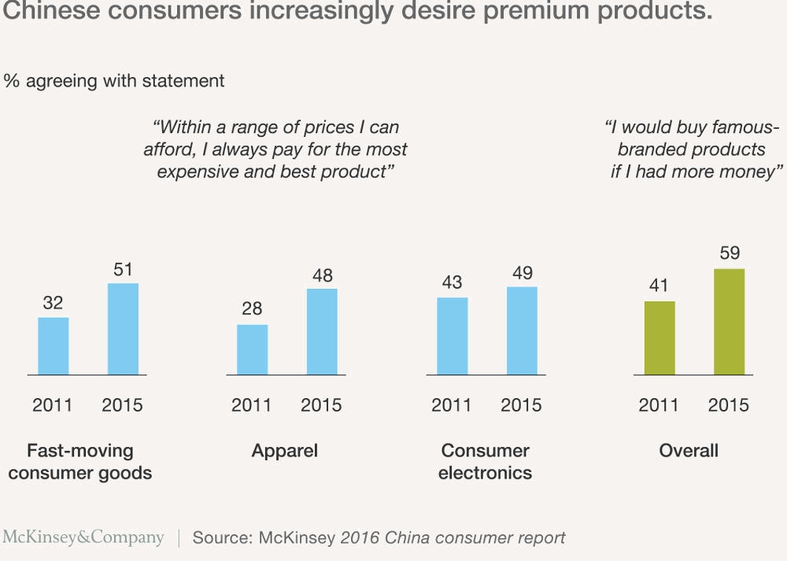

© 2019, LITAO. Todos los derechos reservados. labas@litao.lt

Estas son algunas preguntas que la gente debería de cuestionarse pero a menudo no lo hacen.
Las estamos divulgando para ti, te compartimos desde el panorama general hasta los puntos más específicos. Si tienes alguna pregunta no incluida en esta lista ¡háznoslo saber!

En el actual siglo XXI China es una superpotencia emergente que todavía está alcanzando fuerza propia, una burocracia autoritaria en medio de un caos organizacional. Aunque ya es un jugador importante en el escenario mundial, todavía tiene mucho lugar para crecer. Desde el 2010 China se ha mantenido como la segunda economía con en el mayor PIB del mundo superando a Japón. Sin embargo, según el Fondo Monetario Internacional, cuando el PIB se ajusta a la paridad del poder adquisitivo, China es oficialmente la economía más grande del mundo lo que significa que los consumidores chinos tienen más poder de adquisitivo per cápita que en cualquier otro lugar del mundo. Y hay MUCHOS consumidores: una de cada cinco personas en el mundo es de nacionalidad china. Es posible que hayas escuchado que el crecimiento actual del PIB de China es el más bajo en décadas (2016 fue de 6.7%). Pero eso es solo en comparación con su tasa de crecimiento promedio del 10% por año iniciado desde las reformas económicas de 1978. Aunque el crecimiento es menor, de cualquier manera a China le va extremadamente bien en términos reales (el crecimiento del PIB de Estados Unidos para 2016 fue menos de la mitad del de China). La desaceleración es parte de un proceso natural después de un crecimiento tan rápido. Gran parte de la desaceleración también tiene que ver con la transición de China de ser un fabricante barato de productos (ahora eso se traslada a lugares como como Vietnam) a ser un gran consumidor con una clase media numerosa y en rápido crecimiento. Según el informe de riqueza de Credit Suisse de 2015, China tiene una mayor población de adultos de clase media que Estados Unidos. Más información: Riqueza mundial en 2015: las tendencias subyacentes siguen siendo positivas Con un sector tan grande de nuevos consumidores potenciales. En este momento China es realmente uno de los países más importantes del mundo, tanto en los negocios como en el ámbito político.
En términos generales, la clase media más grande del mundo — lo que se traduce en valores e intereses relacionados específicamente con un sector poblacional muy particular. Las compañías occidentales solían dirigirse únicamente a los sectores de alto poder adquisitivo en China (es verdad que China tiene MUCHOS millonarios); pero ahora los clientes chinos son mucho más diversos y ya no solo están ubicados en las ciudades costeras. ¿Entonces, qué quieren los chinos? Primero que nada, es importante entender que no existe solamente un tipo de China o un solo tipo de consumidor chino: es un país enorme con provincias y preferencias regionales distintas. China, con sus 35 diferentes regiones administrativas, 56 etnias reconocidas oficialmente y más de 200 dialectos, es un país sumamente complejo. Las diferencias de gustos de los consumidores entre una región de China y otra son comparables a las diferencias comunes existentes entre países, sin mencionar las diferencias entre las ciudades de primer nivel (Beijing, Shanghái) y de más bajo nivel (Ziyang, Leshan). Realmente debes saber a quién quieres dirigirte. Sin embargo, existen ciertas tendencias en las que podemos basarnos. Según resultados publicados por McKinsey en su “ Informe sobre el Consumidor de China” (2016), después de encuestar a 10,000 consumidores en 44 ciudades de China, determinaron que existe un cambio en cuanto a los criterios de elección en donde con más frecuencia el consumidor chino da preferencia a productos Premium. Leer más: Aquí viene el consumidor moderno chino.  Las marcas locales chinas siempre serán las mejores para el mercado de consumo masivo, pero las marcas chinas no generan confianza para productos Premium, especialmente en el sector cosmético y de la salud. El 38% de los consumidores encuestados mencionaron que los "Productos Orgánicos / Saludables" están dentro de sus tres principales prioridades. Esto a pesar de que China en sí no tiene una certificación orgánica reconocida, lo que significa que las certificaciones extranjeras son más importantes que nunca. También es importante considerar q los consumidores chinos son cada vez más jóvenes y por ende, nativos digitales. Revisa, comparten y basan sus compras en comentarios de la web, son mas abiertos a probar cosas nuevas y de lugares nuevos, lo que los vuelve una generación más occidentalizada en comparación con sus predecesores. Más información: Mapeo de la clase media de China. Las estrategias de consumo que solían funcionar antes — atraer a un amplio grupo de personas con un producto estandarizado — ya no funciona actualmente. Los chinos se están volviendo mucho más específicos con lo que les gusta o no, con lo que quieren y no quieren. El mercado actual exige estrategias hechas a la medida. Y en comparación con las generaciones anteriores, gastan un mayor porcentaje de su ingreso, esto significa que si realmente les gusta algo, no necesariamente lo dejarán para después.
A diferencia de Europa, en donde casi todas las personas con educación superior hablan inglés, en China es normal encontrarte con que la mayoría de los empresarios e inclusive altos directivos no dominan el idioma. Si aquellos en los altos puestos aún no hablan inglés, ciertamente es poco probable que proveedores y fabricantes lo hagan. Ahí es donde entramos nosotros. Si tienes un gran producto o servicio, te ayudamos a entender como posicionarlo correctamente en China y al mismo tiempo te acompañamos durante todo el proceso, desde la creación de una estrategia, pasando por la creación de una red de negocios, hasta la firma del contrato final, y más aún allá.
A menos que su amigo sea un diplomático de medio tiempo, un empresario y un negociador audaz no es recomendable. Gran parte de la interpretación va más allá del lenguaje en sí, se trata del tono, del contexto cultural y de la experiencia previa. Si permites que alguien simplemente traduzca los documentos de tu empresa, prepárate para enfrentarte con mala información, información omitida o incluso información innecesaria. Todo termina perjudicando tu objetivo.
Los chinos prefieren trabajar con personas que entiendan su país y a sus población. Necesitas a tu lado a alguien con un profundo conocimiento de China para poder navegar en este mercado. Incluso las cosas más simples como la transferencia de dinero y las expectativas de pago difieren en este país. Si no puedes establecerte de forma permanente en China, necesitarás a alguien con quien los proveedores y los distribuidores puedan comunicarse fácilmente. También deberás operar en un ecosistema de redes sociales y marketing completamente diferente, con plataformas móviles originarias y específicas para China (consulte ¿Qué es WeChat?); los sitios web tradicionales no son ni cercanamente importantes en China como lo son las plataformas para móviles. En el área administrativa, las empresas extranjeras a menudo terminan en problemas debido a las complicadas y siempre cambiantes regulaciones de importación, exportación, y leyes laborales. En cuanto a los empleados, el gobierno chino obliga a los patrones a registrar información del personal en las oficinas pertinentes, mantener archivos y pagar las prestaciones e impuestos sociales por sus empleados. Por lo tanto, incluso si decides establecer tu empresa por tu cuenta y tener legalmente empleados chinos, necesitarás ayuda de una agencia de trabajo. Las leyes chinas no siempre se aplican como están escritas, y situaciones como las anteriores hacen que sea recomendable tener un “pie” en China que pueda apoyarte.
Como expertos en china, los consultores serán tu guía y gurú: parte abogado, parte intérprete, parte mentor. Somos solucionadores de problemas pero también los prevenimos con soluciones culturalmente sensibles para la investigación de mercado, el desarrollo de relaciones y estrategia. Te dejamos las cosas claras para que puedas dar el siguiente paso. Los consultores te brindarán consejos de negocios basados en sentido común respaldados por investigaciones de primera mano, experiencia y conexiones. En LITAO hacemos más que dar consejos, te ayudamos en el proceso de implementación. Un consultor especializado en China es un guía para todo lo que no tiene sentido en este país: cultural, lingüística, logística y legalmente hablando. Somos diferentes a una agencias o representantes porque te ayudamos a planear estrategias para el crecimiento a largo plazo. Si bien la interpretación es uno de nuestros servicios, ayudarte a comprender el idioma y negociar con socios comerciales es solo una pequeña parte de los servicios que brindamos. Todas las culturas han tenido sus asesores: desde chamanes y curanderos hasta visires y consejeros generales. Los chamanes toman información de otros mundos para aplicarlos en este. Los líderes y visires asesoran a sus jefes de estado. Los consejeros generales dan asesoría legal con décadas de experiencia en litigios. Todos ellos actúan como intermediarios entre la experiencia y la decisión. Todos ellos ayudan a un pueblo, país o compañía a convertirse en mejores versiones de sí mismos.
Debe pensar a nivel local: saber en qué sector del mercado chino desea expandirse y no pensar en China como solo un país. Una vez que lo sepas, podemos ayudarte a desarrollar tu mensaje clave para los consumidores. Además de encontrar una compañía confiable para aconsejarte y asesorarte a nivel local, también te recomendamos que registres tu marca con tanta antelación y en tantas categorías relevantes como sea posible, ya que China tiene un sistema de marcas registradas que favorece a la persona que registre la marca primero. Es por eso que el multimillonario Donald Trump se registró como propietario de “Trump” como marca registrada en servicios de construcción en 2006, a pesar de que a hasta el día de hoy su marca de hotel aun no ha llegado a China. Más información: La marca Trump gana una batalla en China. Según el New York Times, Trump posee aproximadamente 29 de las 46 marcas registradas de “TRUMP” en China. Un tribunal chino ratificó recientemente la marca comercial, prohibiendo a otras compañías el uso del nombre en la industria de la construcción. Otros productos, como la popular marca “Trump Toilets”, también pueden ser legalmente cuestionables, pero nada de esto habría ocurrido si los abogados de uno de los hombres más ricos del mundo no hubieran tomado precauciones. Más información: La victoria de Trump en China.
“El lenguaje no es solo la forma en la que expresamos nuestros pensamientos, sino también la forma en la que creamos nuestros pensamientos”. —Chin-Ming Chu A menudo escuchamos a nuestros clientes decir algo como: “No entiendo cuál es la respuesta de esta persona. Hice una pregunta abierta y él respondió "sí". Mucho de eso se reduce a saber cómo hacer la pregunta correcta. No solo existe una barrera de idioma, a veces los chinos no entienden estándares de calidad: "lo suficientemente bueno" para ti puede ser satisfactorio o no, y pueden solo decirte que todo está bien aunque no lo esté. Especialmente cuando pueden aprovecharse de un novato. La negociación comercial significa hacer preguntas específicas y adaptadas para que la respuesta no quede en conceptos vagos. (A veces, para evitar decir un "no" directo a una solicitud, los chinos simplemente dirán "ya veremos" o se tardarán en responder). Debes conocer las palabras claves antes de preguntar. Aquí es donde te podemos ayudar. Los chinos no necesariamente piensan de manera lineal, así que no siempre esperes que las propuestas vayan de A - B - C o que un plan de negocios con un distribuidor se ajuste estrictamente a la fecha límite. Hacer negocios en China a menudo significa ir en círculos, muchas reuniones solo para conocerte. Hasta que logres que el distribuidor confíe en ti (es decir “no somos amigos, pero me pareces alguien amigable”), es probable que los negocios no se concreten. Es por eso que el “Guanxi” (explicado a continuación) es tan importante en China. Los empresarios chinos que han trabajado con nosotros en el pasado saben que pueden confiar en nosotros, por lo que también confiarán en ti.
Todos en China saben que para hacer negocios en este país, necesitas tener dos cosas: Guanxi y dinero. Solamente dinero no es suficiente. "Guanxi" significa relaciones o conexiones personales: esa red de contactos entre personas que se conocen y que se hacen favores entre sí, en los negocios y en la vida. En China, una tierra donde casi todo puede ser falsificado, mucho depende de la confianza personal. Las personas de carne y hueso son más confiables que las palabras en línea y es menos probable que desaparezcan, especialmente si las conoces por un tiempo. La importancia del “Guanxi” es tal que existen empresas chinas que tienen personal especialmente dedicado a esta función de conocer a alguien o estar en contacto con alguien importante por conocer. ¡Este tipo de posición definitivamente no existe en empresas occidentales! Llevamos años cultivando la confianza con todo tipo de personas a través de reuniones presenciales y un historial de mucho trabajo. Conoce nuestro Guanxi.
Una auditoria se trata de realmente asegurarse que cualquier compañía sea lo que dice ser. Esto varía desde si la empresa existe o no hasta si tiene comentarios positivos, empleados regulares y finanzas sanas. Durante nuestra experiencia, hemos encontrado compañías falsas con cuentas en el extranjero o compañías con sitios web y sin instalaciones de fabricación, o incluso compañías que toman prestadas las oficinas de otros. Si no verificas primero, no hay forma de que un tribunal pueda recuperar tu dinero en caso de tener un problema. Piensa lo peor para garantizar lo mejor. LITAO una vez salvó a una empresa de gastar 30,000 EUR al notar que el nombre de la compañía en la factura no coincidía con el que habían proporcionado en otros documentos. Lo anterior se describe como auditoría financiera u operativa, y los proveedores certificados con ISO (Organización Internacional de Normalización) pueden ser calificados en papel, pero la experiencia en tiempo real y la reputación de boca en boca es aún mejor. Necesitas personas experimentadas para verificar si los documentos, incluida una licencia comercial son reales, así como para conocer acerca de las estafas más comunes. El segundo tipo de auditoría ocurre DESPUÉS de haber encontrado el proveedor con el que deseas trabajar. Este es un proceso de control de calidad a nivel de fábrica y nuevamente requiere visitas regulares a las instalaciones para garantizar la calidad de trabajo. Incluso si los primeros lotes de muestras fueron satisfactorios, la fábrica puede optar por reducir los costos en el futuro, por lo que los lotes deben revisarse regularmente previo al envío para garantizar que los estándares acordados sean cumplidos.
WeChat, propiedad del gigante tecnológico chino TenCent, es la respuesta de China a Facebook, Skype, WhatsApp, Apple Pay y muchos otros sitios web tradicionales combinados. Puede hacer todo, desde chats simples y grupales hasta transferir dinero, realizar compras, jugar videojuegos, pedir comida, pagar facturas, pedir un taxi y seguir las novedades de tus compañías favoritas. Hasta el 2016, la aplicación ha crecido un 35% en el último año llegando a 850 millones de usuarios activos mensuales y 1.1 billon de usuarios registrados, casi todos ubicados en China.
Sin embargo, las cifras por sí solas no muestran cuán dedicados son los usuarios: la aplicación tiene ~ 750 millones de usuarios DIARIOS, la mitad de los cuales usan la aplicación al menos 90 minutos al día. Además, el 85% de los usuarios tienen entre 22 y 55 años de edad, un grupo demográfico de consumidores potenciales. Comunicarse por WeChat y no por correo electrónico ni por teléfono, es el método de comunicación preferido para asuntos personales e incluso de negocios.
En gran parte de China, especialmente los nuevos consumidores jóvenes y de clase media, observan y exploran, compran y hablan por celular, el cual cada vez es más importante que los sitios web tradicionales. Asia oriental, en particular, ama usar las redes sociales desde sus dispositivos móviles:
 WeChat también tiene una opción empresarial para que las compañías activen sus cuentas oficiales que luego los usuarios pueden seguir para noticias, promociones y chats grupales. Muchas compañías de hecho prueban primero sus aplicaciones lanzando una cuenta oficial de WeChat para ver si son populares.
Aquí podrás encontrar un breve informe de datos de WeChat.
WeChat también tiene una opción empresarial para que las compañías activen sus cuentas oficiales que luego los usuarios pueden seguir para noticias, promociones y chats grupales. Muchas compañías de hecho prueban primero sus aplicaciones lanzando una cuenta oficial de WeChat para ver si son populares.
Aquí podrás encontrar un breve informe de datos de WeChat.
En China, las imágenes en blanco y negro solo se utilizan para personas fallecidas, por lo que no querrías que algo así apareciera en tu sitio web. Este es un ejemplo del contexto cultural cotidiano que no encontrará en ninguna guía sobre China, solamente analizando caso por caso.

Porque creemos en enseñar a las personas a pescar por sí mismos.
Los siguientes enlaces contienen información relevante para hacer negocios en China. No se compara con la investigación adecuada obtenida de primera mano, pero son un buen comienzo para entender a China.
GLOBAL SOURCES:
A great Q&A web-site on all things related to China manufacturing & sourcing (sample articles: 7 items you probably forgot to put in your contract with the factory; how much can I save by moving production from Europe to China?; as a new and small company, how do we choose from a myriad of suppliers who seem to make the same product?)
Written by a team of lawyers immersed in China’s legal system, this blog has lots of nitty-gritty details on bureaucratic procedures, intellectual property matters, and other China-specific business solutions.
This project funded by the European Union offers free consulting for small and medium-sized enterprises working in China.
The American Chamber of Commerce in Shanghai, besides being a local business network, also provides overview reports on markets, the economy, Chinese policy, and other business intelligence. Make sure to check out the Chamber of Commerce for your country, as well as the European Union Chamber of Commerce in China
A blog on Chinese negotiation solutions for Westerners doing business in China. Includes business deal warning signs, conflict management tips and other cultural broker advice.
Don’t just rely on the Western media’s portrayal of China. Caixin is China’s version of “The Economist” and China’s most widely read source of business and finance news—independent and significantly less biased than other local media, but more in-depth than international news sources.
A page in English provided by China’s highest executive body on guidelines and forms for doing foreign business in China.
Downloadable PDF link for “The Modernization of the Chinese Consumer” at bottom. McKinsey surveyed 10,000 consumers across 44 cities in China to establish current consumer trends.
Data in English provided from the National Bureau of Statistics of the People’s Republic of China. Provides statistical data at various regional and national levels, including consumer and producer goods and prices, industrial production, census, and market and industry surveys.